Tus ventas, sin IVA
Sube el Excel que saca tu caja, sea cual sea el TPV. Con Square, muy pronto, entrarán solas cada noche.
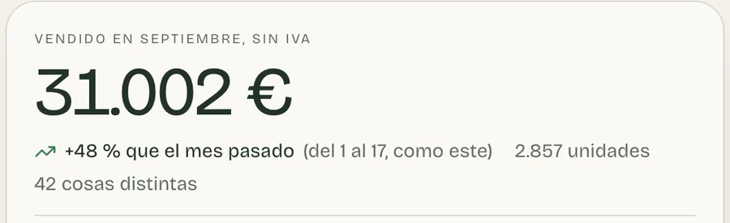
Para restaurantes, bares y tiendas
Haz una foto al albarán o sube la factura que te llega por correo. Teresa la lee y te dice en euros cómo va tu negocio.
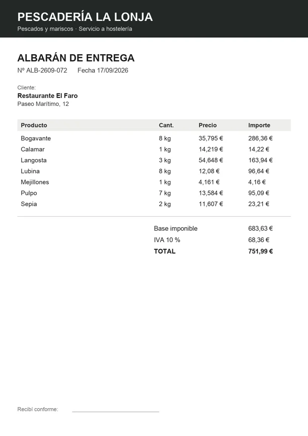
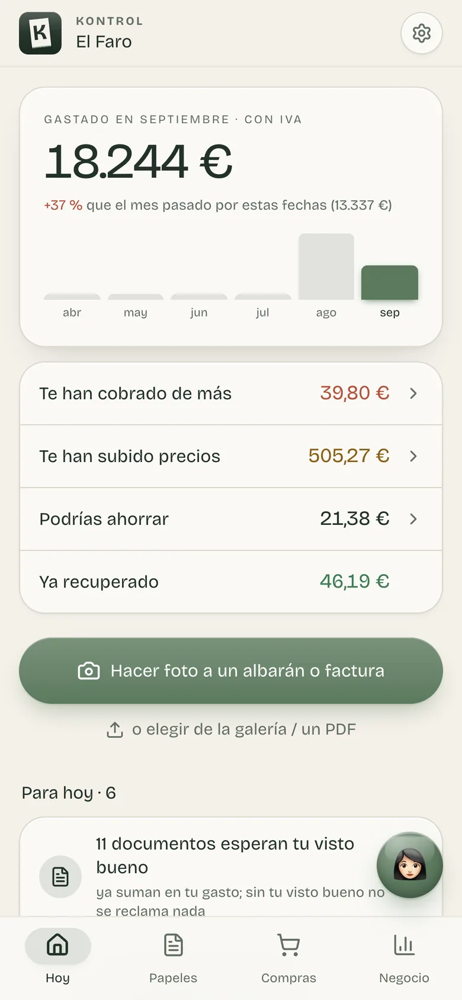
Leído y cuadrado7 productos · 751,99 €
Te suena
Albaranes en una caja, facturas en el correo y la calculadora a mano. Y a final de mes, la duda de siempre: ¿cuánto me queda?
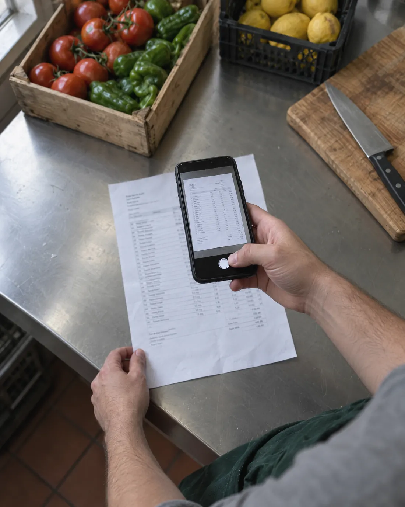
Lo que cuadra entra solo y solo te pide mirar lo que no. Revisas una parte pequeña, con el papel al lado.
Cómo funciona
Así se ve la app, con un restaurante de ejemplo. Al bajar, la pantalla se acerca al dato que importa.
1Papeles
Haz la foto con el móvil, sube el PDF o reenvía el correo del proveedor a tu buzón. Teresa lee cada papel línea a línea y lo deja en su mes.
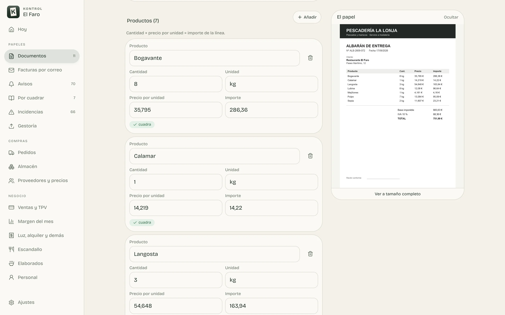
2Avisos
Cada línea de cada albarán se compara con lo que pagabas antes. Con el papel de prueba y el mensaje para el proveedor ya escrito.
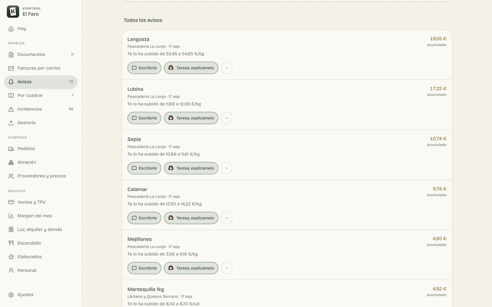
El mensaje lo mandas tú, por WhatsApp o por correo. Nada sale solo.
3Escandallo
En restaurantes
Sube el pescado y el plato se mueve solo. Ves lo que te deja cada uno sin hacer una sola cuenta.
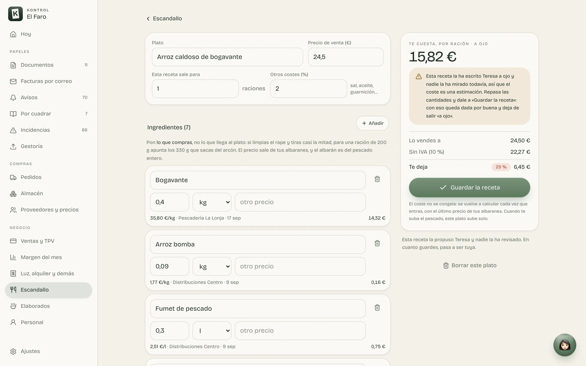
4Margen
Las ventas llegan de tu caja; las compras, de tus papeles; el personal y el alquiler, de lo que apuntas una vez. Todo sin IVA, como lo mira tu gestor.
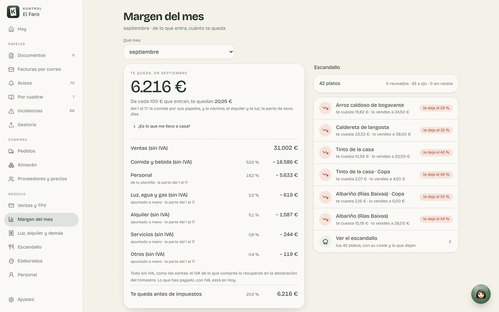
De cada 100 € que vendes
Si falta un papel, te lo dice: un albarán que no está hace que el margen parezca mejor de lo que es.
5Gestoría
Cada mes, lo que tu asesor necesita, ordenado. Desde el móvil se lo mandas; en el ordenador lo descargas.
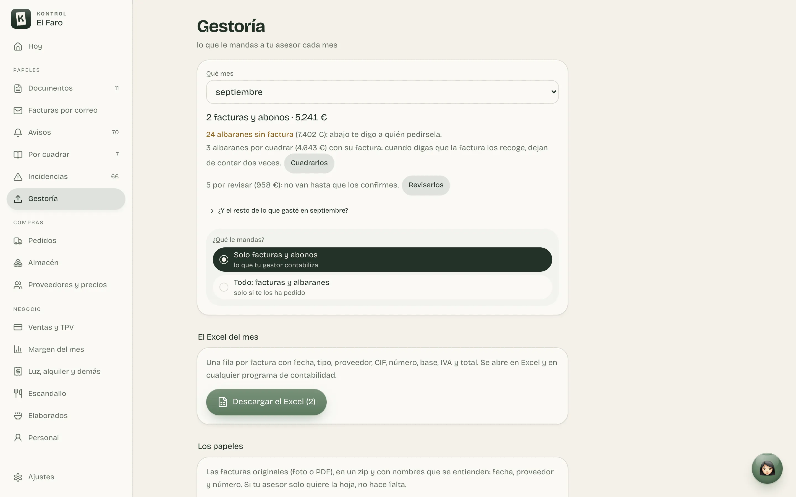
Junto a cada aviso hay un «Teresa, explícamelo». Y desde cualquier pantalla le preguntas lo que quieras: te contesta con tus números o te dice qué botón tocar.
Las cuentas las hace la app con tus papeles. Si falta un dato, te dice dónde mirarlo.
Te deja escrito el mensaje al proveedor o el pedido. Lo envías tú.
Te dice qué botón tocar; lo tocas tú.
Qué IVA lleva algo o qué te puedes deducir, eso con tu gestor.
Compras y almacén
Pides al proveedor, marcas lo que llega y cuentas el almacén de pie, con el móvil. En restaurantes, bares y tiendas.
Y en «Proveedores y precios», en quién se te va el dinero y qué te ha subido cada uno.
Lo que llega, lo que vendes, lo que cuesta tu equipo y lo que tienes que reclamar.
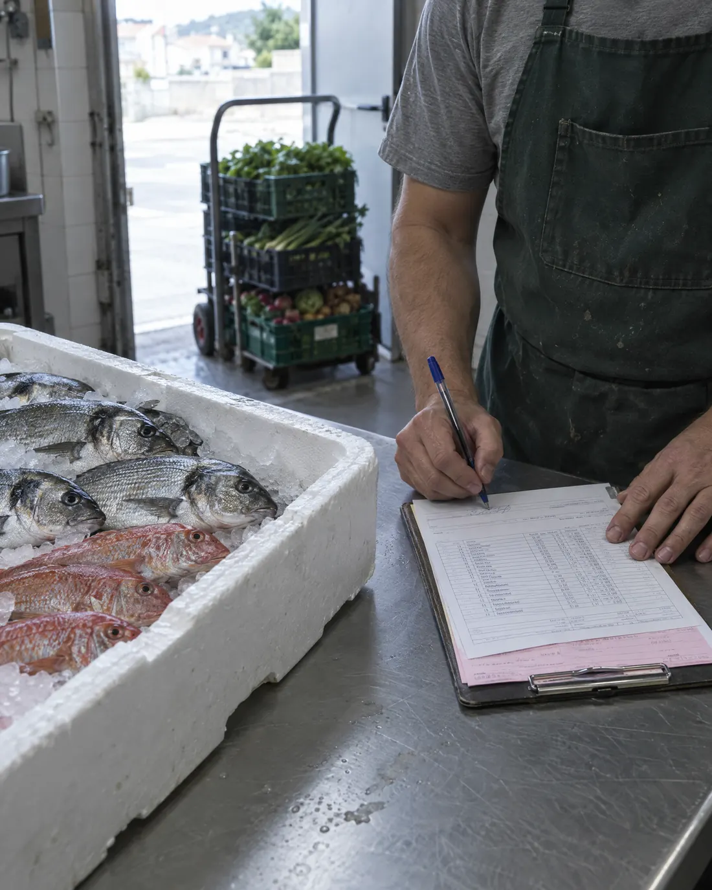
Lo que falta queda apuntado, con sus euros, para reclamarlo.
Sube el Excel que saca tu caja, sea cual sea el TPV. Con Square, muy pronto, entrarán solas cada noche.

Cuánto te cuesta una hora y qué parte de lo que vendes se va en sueldos.
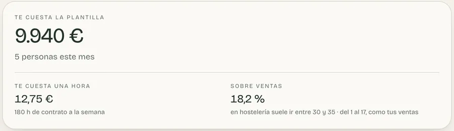
Lo que ha visto Teresa en tus papeles y lo que apuntas tú, en un sitio, hasta que lo cobres.
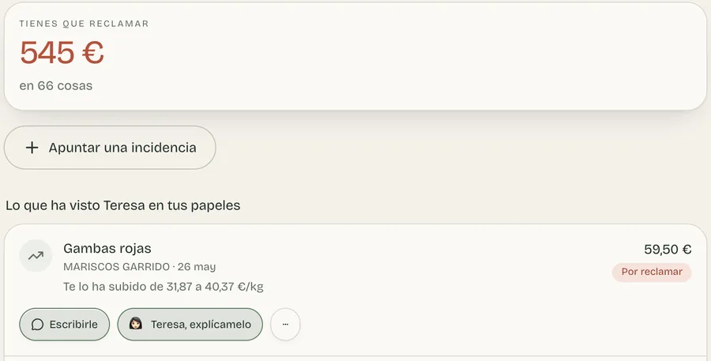
Una dirección solo tuya: reenvías ahí las facturas que te mandan, o haces que tu correo las reenvíe solo, y entran sin hacerles foto.
La instalas en el móvil y se abre de un toque, como una app. Tu encargado y tú, a la vez: si tocáis lo mismo, avisa y no se pisa nada.
En tiendas
Sin la parte de cocina: tus facturas de compra, tus proveedores, tus pedidos, tu almacén, tu margen y lo del gestor.
No. Tú haces la foto y miras lo que no cuadra. Las cuentas las hace la app y, si algo no se entiende, Teresa te lo explica en cristiano.
No. Le deja preparado lo suyo cada mes: el Excel y los papeles. Lo fiscal lo sigue decidiendo él.
Las subes tal cual, en PDF, o las reenvías a tu buzón de facturas. Incluso puedes hacer que tu correo se las reenvíe solo y entren sin que hagas nada.
Lo que no cuadra no se confirma solo: te lo enseña con el papel al lado para que lo mires y lo corrijas. Hasta entonces no se reclama nada a nadie.
No. Lo que vendes sale de tu caja: subes el Excel que exporta tu TPV, sea cual sea.
Sí, en el móvil y en el ordenador. Si los dos tocáis el mismo papel o el mismo pedido, avisa y no se pisa nada.
Ningún otro negocio puede ver lo tuyo: cada cuenta ve lo suyo y nada más. Lo tienes todo en la política de privacidad.
Escríbenos por correo o por WhatsApp. Te damos tu acceso y empiezas por los papeles de este mes; los de meses atrás los puedes subir cuando quieras.
Cuéntanos qué negocio tienes y te contamos cómo empezar. Por la mañana, un vistazo, y a lo tuyo.
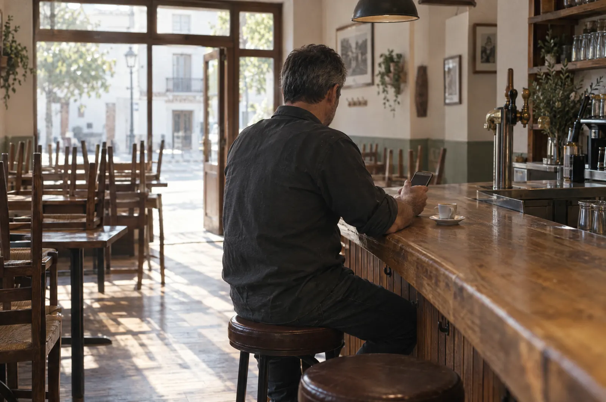
Te contestamos a tu correo.
Te contestamos a lo antes posible.